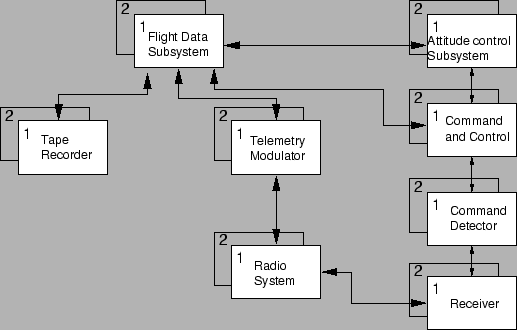

Next: การประยุกต์ใชัในระบบคำนวณที่มีความสำคัญ (Critical-Computation Applications)
Up: งานประยุกต์ของระบบที่คงทนต่อความเสียหาย
Previous: งานประยุกต์ของระบบที่คงทนต่อความเสียหาย
Contents
Index
ตัวอย่างที่เห็นง่ายที่สุดของระบบที่มีอายุการใช้งานยาว ได้แก่การใช้งานทางอวกาศเช่น ยานอวกาศตรวจสอบระบบสุริยะ และดาวเทียม ตัวอย่างเช่น ยานไพโอเนียร์ 10 เริ่มออกเดินทางเมื่อปี ค.ศ. 1972 และ เริ่มส่งภาพของดาวพฤหัสกลับมาใน ค.ศ. 1983, 11 ปีให้หลัง ซึ่งความสำเร็จของภาระกิจของยานขึ้นอยู่กับ ความสามารถของระบบที่จะทำงานตลอดช่วงการเดินทาง เช่นเดียวกันในการใช้งานดาวเทียมซึ่งต้องการให้มีอายุการใช้งานยาวนาน เนื่องจากค่าใช้จ่ายในการออกแบบ การสร้าง และการส่งดาวเทียมขึ้นไปโคจรสูงมาก จึงยอมให้ความเสียหายของอุปกรณ์อิเล็กทรอนิกส์มาขัดขวางการทำงานของดาวเทียมไม่ได้
โดยทั่วไประบบที่มีอายุการใช้งานยาว มีความต้องการความน่าจะเป็นที่ระบบสามารถทำงานได้ที่ระดับ 0.95 ณ. เวลาการทำงาน 10 ปี อย่างไรก็ตาม ระบบสามารถหยุดการทำงานได้ชั่วคราว ตราบเท่าที่ระบบจะสามารถกลับมาทำงานได้อีก ตัวอย่างเช่น ถ้าดาวเทียมหยุดการทำงานเพียวหนึ่งอาทิตย์ในช่วงการทำงานห้าหรือสิบปี ถือว่าน้อยมาก
ตัวอย่างการใช้งานระบบที่มีอายุการใช้งานยาว ได้แก่ ระบบควบคุมยานอวกาศวอยเยเจอร์ แสดงในรูป 9.2 ระบบประกอบด้วยส่วนทำงานหลักแปดส่วน ได้แก่ ระบบข้อมูลการบิน, ระบบควบคุมความสูง, ระบบสั่งงานและควบคุม, ระบบวิทยุ, ระบบมอดูเลททางไกล, ระบบตรวจจับคำสั่ง, ตัวรับ, และเทปบันทึก. ทุกส่วนประกอบมีสองโมดูลที่เหมือนกันทุกประการ โมดูลหนึ่งเรียกว่าโมดูลหลัก (Primary) อีกโมดูลหนึ่งเป็นโมดูลสำรอง (Backup) ถ้าโมดูลหลักเกิดเสียหาย โมดูลสำรองจะเข้ามาทำงานแทน
Figure 9.2:
ระบบควบคุมยานอวกาศวอยเยเจอร์ เป็นตัวอย่างของการประยุกต์ของระบบที่มีอายุการใช้งานยาว
|

|
Vara Varavithya
2002-03-09